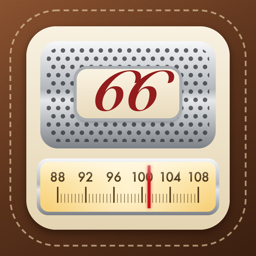

A vintage radio for your own music. Your playlists, artists and Apple Music become stations on the dial. Turn the knob, and they come in through the static.
Contact · FAQ · Privacy Policy
Found a bug, have a question, or want to suggest a new radio? Email us. We usually reply within a few days.
Can I listen to live radio stations?
No. Dial 66 is a music player designed like a vintage radio. Every station plays music from your Apple Music account or your music library.
Do I need Apple Music?
No, but it helps. Without a subscription, stations play songs saved in your music library (for example, songs you bought or synced). With a subscription, you can also tune in to Apple Music playlists, and Dial 66 adds decade stations for you.
Does it work with other music apps?
No. Other music services don't let apps play their songs, so only Apple Music and your music library are supported.
A station says “Off the air.”
The station has no songs it can play. Check that music access is on in Settings > Dial 66, that the playlist still has songs, or, for Apple Music stations, that your subscription is active and you're online.
Why does a station start in the middle of a song?
That's on purpose. Every station is always “on the air,” even when you're tuned somewhere else. Tune back in and you join the broadcast wherever it is, just like a real radio.
How do I add or change stations?
Tap the station icon in the top-left corner. Tap + to add a station, or swipe a station to edit or delete it. In “Plays,” choose a playlist, artist, genre or album, or search Apple Music playlists.
The static is too loud.
Tap the gear icon and lower “Static Between Stations.” You can also turn off the dial clicks there.
How do the Car Radio buttons work?
Tap a button to jump to its station. Hold a button to save the station you're on.
Does it keep playing when my iPhone is locked?
Yes. You can pause or skip from the Lock Screen and Control Center. Use the sleep timer to turn the radio off after 15, 30 or 60 minutes.
Last updated: October 2026
Dial 66 (“the App”) is provided by an independent developer (“we”). This policy explains how the App handles information.
We do not collect any personal information. The App has no accounts, no ads, no analytics and no tracking. We have no servers, and nothing you do in the App is sent to us.
Your music
With your permission, the App reads your music library (song, playlist, artist and genre names) to build stations. This stays on your device. If you subscribe to Apple Music, the App asks Apple Music for playlists and songs; those requests go directly between your device and Apple and are covered by
Apple’s Privacy Policy.
Stations and settings
Your stations and settings are stored only on your device.
Purchase
The App is purchased through the App Store. Apple processes the payment, and we do not receive your name, email address or payment information.
We do not collect, store or share any personal information from anyone, including children under 13.
Deleting the App removes its stations and settings from your device. You can turn off music access at any time in Settings > Dial 66.
We may update this policy when the App changes. Updates will be posted on this page with a new “Last updated” date.
Questions about this policy? Email us at tajimaru1209@gmail.com.